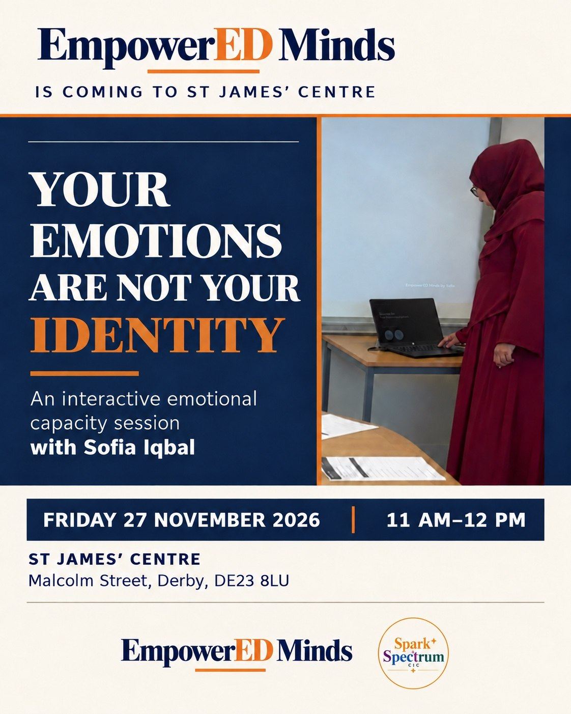

EmpowerED Minds with Spark & Spectrum CIC
Your Emotions Are Not Your Identity
A free in-person workshop with Sofia Iqbal, co-founder of Spark & Spectrum CIC.
Friday 27 November 2026 · 11 am–1 pm
St James’ Centre
Malcolm Street, Derby, DE23 8LU
Booking is optional. Letting us know in advance helps us plan for numbers and gives us an idea of who’s interested. If you’re only just hearing about it, feel free to pop by on the day.
Let Sofia know you’re coming